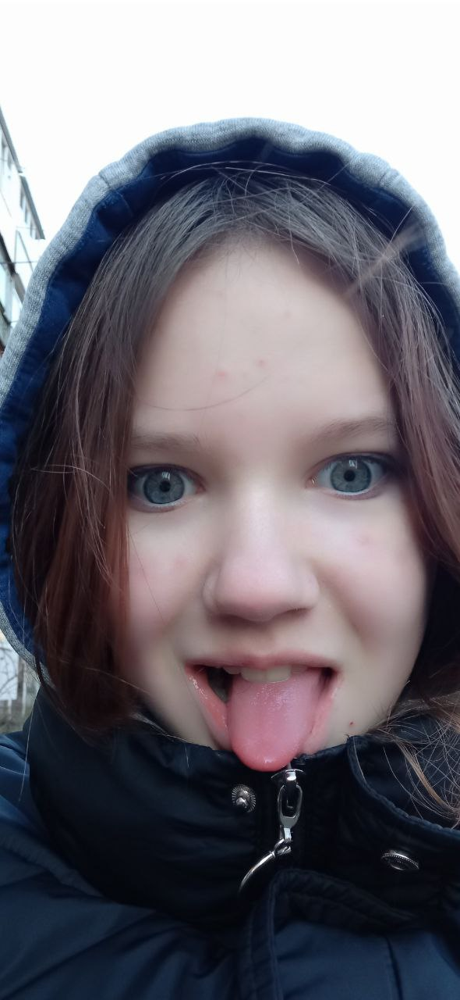

Анастасия Враждебная
Краткая информация:
- Фото: 
- Объект №: SCP-543-Соня
- Класс объекта: Кетер
- Особые условия содержания: SCP-543 Соня должна содержаться в стране повышенного комфорта, а точнее Литве, т.к. в других странах повышается риск побега объекта. Должна находиться в лагере под названием "Солнышко", в котором будет один бассейн, а так же собачья будка размером 1x1x1 метров для удержания объекта.
- ФИО:Лутсенка София Агрессивная
- Дата первого обнаружения: 09.01.2009
- Рост: 1,6м
- Вес: 50кг
- Номер телефона: +380987154305
- Предположительный род деятельности перед поимкой организацией: производство говна, дочь Елизаветы Уродины, агро-гимнастка
- Ориентация: тупорылая
Информация, которую смогли выведать Мобильная Оперативная Группа Бубылда 8, сокращенно М.О.Г Б-8, смогла помочь удержать объект под стражей. Первый раз объект был замечен на Украине, город Винница, на месте, где террористическая организация "АУЕ-БАЛБЕСЫ" совершили один из опаснейших инцидентов в мире под названием [ДАННЫЕ УДАЛЕНЫ], где они совершили [ДАННЫЕ УДАЛЕНЫ] при помощи объекта SCP-543. Там же был найден документ, описывающий предположительную жизнь объекта. Вот что там записано:
Детство
София Агрессивная родилась 9 января 2009 года в городе Винница, Украина. Грустное детство Сони даёт о себе знать. В один день Соня заснула, и после сна, где искорка из Винкс убила всю её семью, она проснулась с умственной отсталостью. Немало хорошего было в её жизни, в прямом и переносном смысле, начиная инцидентном с говном в бассейне, которую она сама произвела, заканчивая тем, что она обустроила свой же ресторан говна, с такими же умственно отсталыми детишками, как она. Благо она перестала с ними общаться, но интеллекта ей так и не прибавилось.
Школьные годы
В школе маленькая Соня отличалась особенной тупизной. Тогда она и познакомилась с Елизаветой Уродиной(Масиро). Вместе они показывали свою гибкость в Лайке, набравши 7 тысяч подписчиков. Мало того, что она не училась от слова совсем, в отличии от своей подруги Лизы, так ещё и она исчезала с контрольных, якобы на выступления по гимнастике, но вступительные в 5 класс она сдала, и по непонятной причине оказалась в математическом классе вместе с Масиро, где они познакомились с Анастасией Враждебной(Каменской). И вот так, день за днём, они проводили дни всё веселее, и в один день они словили настолько сильный приступ истерики, что успешно забыли о существовании физики и их агро-подруга ушла в свободное падение вниз по лестнице.
Бедная мамочка Масиро пыталась прокормить своих подруг и отдавала все деньги на школьные обеды, думая, что у Сони есть проблемы в семье и нехватка денег.
Настоящее время
Успешно обманув свою подругу Масиро, Соня на накопленные деньги с обедов двинулась в Литву уже как на 5 месяцев. Но она не забывает о своих подругах и ежедневно хвастается своими покупками одежды и пельменей. Также она отвергла всех своих хахалей из Литвы ради одного единого Кокуса, который не даёт ей покоя уже много ночей, она не знает как действовать, потому что она не умеет проявлять инициативу в отношениях и контролировать свою агрессивную сущность, поэтому она каждую ночь закидывается одноразками и катается на роликах по всей квартире, рассуждая о том, как ей завоевать сердце этого недоступного одинокого мужчины. Также запугивает Илью с Гришей своей несдержанной агрессией, и Гриша теперь даже с ней в одном голосовом канале сидеть не хочет. Фонд, решивший, что сам не справиться, решил связаться с Верстальщиками Говна, и они совместными усилиями сдерживают объект. На данный момент помочь ему нельзя, разве что скинуть ему деньги на пропитание и содержание - 5168755904505282.